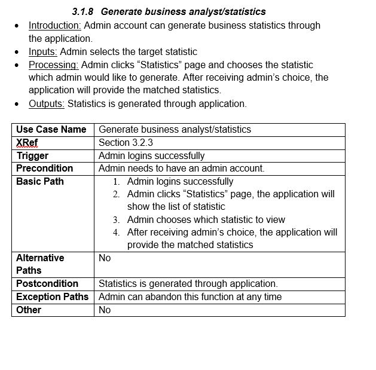

Requirements Analysis and Design
Introduction
Purpose
The purpose of this document is to present the high-level software requirements for the Tea subscription box app. The features of the system will be described in detail and various diagrams will be created to ensure the users of this document have the same understanding of the system. The use cases of the system will also be discussed in this document. The intended audiences for this document are the stakeholders and the developers of the app.
The following diagrams will be in this document:
- Normalized Data Model Diagram
- Activity Diagrams
- Sequence Diagrams
- UML Class Diagram
- Data Flow Diagram
Scope
In scope:
- This app will have a simple, easy to navigate user interface
- This will keep users engaged with the app and have a positive experience with the app
- The app must be simple enough for any stakeholder to use no matter their knowledge of technology
-
App will bridge the gap between customers and tea company
- Instead of having to sell the company’s product through specialty stores/grocery store, product is sold directly to customer
- Customers will be able to view subscription plans but will not be able to rate or order until they have registered
- The app will have a registration/login system where customers can register/login and admins can login. The appropriate view will be presented based on account type and successful login
- Customers will be able to manage their orders through the app
- This will reduce customer service costs
- Customers will be able to edit their profile information (name, address, password etc.)
- Customers will be able to leave reviews for subscription plans only if they have ordered it
- This will prevent fraudulent reviews
- Admin account will be able to view customer profiles
- Admins will be able to manager inventory through the app
- Analytics will be created based on the information from the data base for management use
- The analytics will provide a picture of how the company is doing in the market
- Sample analytics: most ordered plan, least ordered plan, best reviewed plan etc
- A sample database will be designed for the app
- Since there is currently no database to use, one will be designed and used for the app
Out of Scope:
-
This app will not cover human resource functions
- Such as employee self-service, performance management, scheduling etc
-
Accounting functions
- Benefits, compensation, accounts payable, billing, etc
-
Shipping and handling of products
- The shipping and handling of products will be handled by the company as this app will not cover its coordination
-
Hosting of the application
- oThe app will be provided in its entirety and it will be up to the company to choose where it will be hosted
-
Training staff to use application
- The project will produce design documents but not training documents.
-
Integration of company database into app
- The company will be responsible for getting their database to function with the app
-
Integration of other systems into the app
- The project currently does not have plans to integrate other department systems into the app.
System Overview
Project Perspective
The Tea subscription box app does not build off any current system and is therefore a new self-contained system as far as the development team is concerned. Whether is replaces an existing system depends on the company’s decision
System Context
The app will address three main strategic issues:
Attract potential customers directly:
- This will be achieved by the app providing an easy to use interface, direct communication with customers (no middleman i.e., grocery stores, specialty stores)
- Plenty of information in app about various teas and their brewing methods
- Many detailed subscription plans to choose from.
Better understanding of the market:
- Data gathered by the app will be stored and used to generate relevant analytics
- Analytics will provide a picture of the current market
- Managers will be able to access analytics through their admin account
Management of inventory:
- Managers will be able to view inventory and relevant analytics whenever they want through their admin account
General Constraints
-
The development tool of choice is currently android studio.
- However other mobile framworks are being researched
-
The app must be installed onto the customers phone
- The memory requirements must be kept low to not inconvenience the customer with memory worries
- Response time for accessing the application features should be low
- Customer must be familiar with using the app/play store
-
A sample database will be designed and used by the team to complete the project
- The implementation of another dataset after the completion of the project will fall on the tea company
- The company can keep up with increased and changing demand of customers
- The products offered through the app is limited to the company’s products
Assumptions and Dependencies
Assumptions:
-
Application will be developed as a mobile app.
- The team is currently looking into mobile frameworks that may be used
- Should the team not be satisfied with the tools they research, discussion will be held to develop the project as a web app.
- The core features will remain the same
- Project team members will remain in constant contact and are available as needed to complete project tasks and objectives.
- Employees of the company are willing to embrace the application.
- The company will be able to correctly implement their database into the application
- The company has a proper distribution chain to meet the demands of the app
Dependencies:
-
Technology:
- The team currently has a limited knowledge on developing on the mobile platform. However, the team is researching the various tools and frameworks that can be used with the platform to meet their needs and develop the proposed app
-
Competition:
- Similar applications exist however they offer other products. It is possible that those companies may be developing an application like this one since they have the experience and means. However, this will motivate the team to innovate and create a higher-quality app
- Customer satisfaction/demands: This dependency is crucial for the app to thrive. The application must be designed with user-friendly features and meet the on-going/changing demands of customers
Functional Requirements
Features

Use Cases
Use Case 1: Guest/Unregistered User
Use Case 2: Registered User

Use Case 3: Admin
Data Modeling and Analysis
Normalized Data Model Diagram
Activity Diagrams
Sequence Diagrams

UML class Diagram
Process Modelling
The following are data flow diagrams for the proposed system

Non-Functional Requirments
Here are the Non-functional the team has identified:
- App will be simple enough to use that the less-technology skilled people will have no trouble with the app
- The app will be available 24/7
- The system will be fully accessible through the app
- The system must be able to support all customers without affecting performance. (Predicted number of users has not be decided yet)
- The source code of the system will be written in a modular so that code can be easily maintained
- All data will be stored on a secure remote server
- All data will be validated to ensure integrity of the system
- User data will not be given any third parties
Logical Database Requirements
A database designed by the team will be used. The normalized data model diagram in 3.3 has the logical requirements for data formats and their relationships. Currently the required storage capabilities are unknown, but the team predicts it will not be a large amount of required storage. As for data retention, the team has decided that all records must be stored indefinitely to create accurate analytics of products. Ultimately the decision of storage capabilities and data retention will fall on the tea company. All data will be validated before stored in the database to ensure data integrity.
Approval
| Project Role | Name | Date |
| Team Leader | My Thuy Trang Le | 11/10/2019 |
| Team Member | Chau Bui | 11/10/2019 |
| Team Member | Kevin Teran | 11/10/2019 |